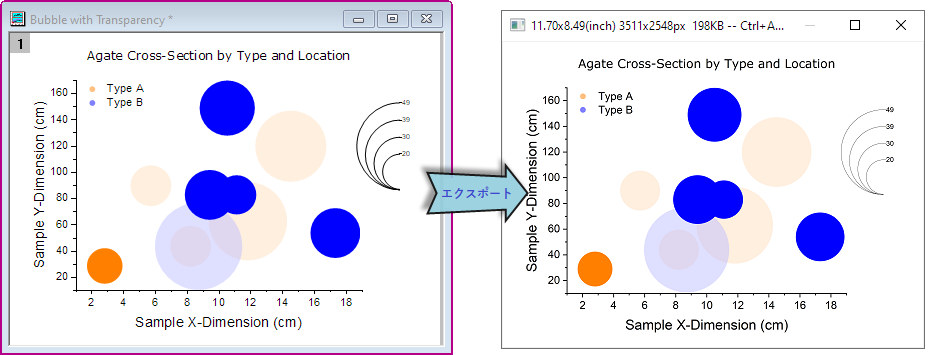
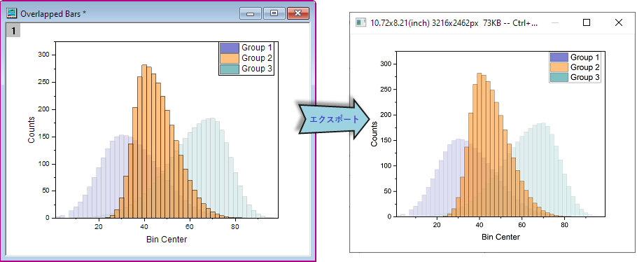
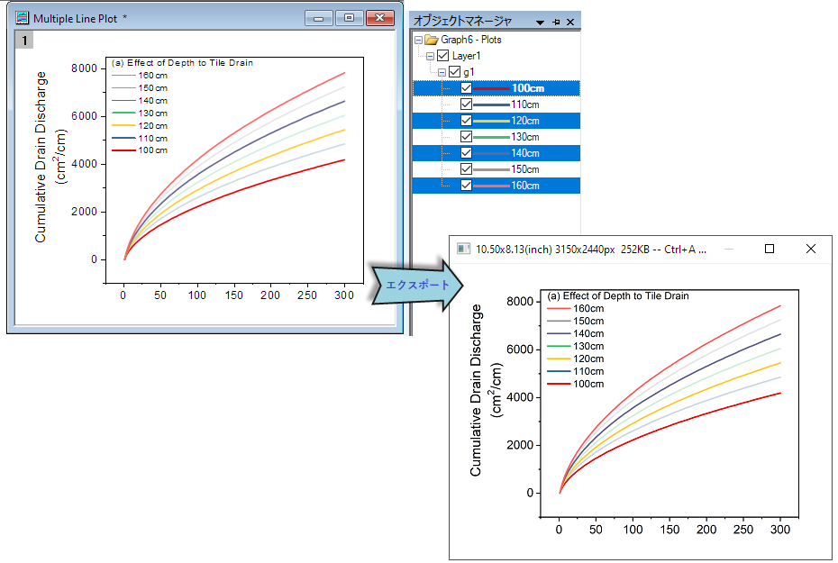

ハイライトエフェクトを付けてグラフをエクスポート
Export-Highlight-Effect
Originは、グラフエクスポートツールまたは画像としてグラフをコピーするツールで、グラフ内のプロット選択エフェクトとデータハイライターエフェクトをエクスポートすることをサポートしています。
- データハイライターツール
 を用いて、エクスポートするグラフの一部を強調表示します。
を用いて、エクスポートするグラフの一部を強調表示します。
- 
- 複数プロットを含むグラフの中から1つのプロットをクリックして選択し、エクスポートします。
- 
- グラフ内の複数プロットを選択してエクスポートには、オブジェクトマネージャを使用します。
- 
 |
- 画像としてグラフをコピーするツール以外にも、グラフコピーを使用して図として貼り付けると、ハイライトエフェクトが維持されます。
|